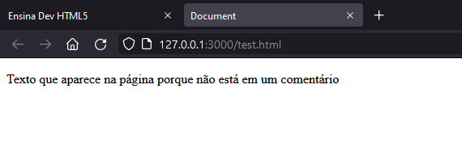

HTML5
Antes de qualquer coisa, o que define um documento HTML é o tipo de arquivo. No caso de uma imagem, ela pode aparecer como .jpg ou .png, correto? Um PDF aparece como .pdf. Um documento HTML segue a mesma linha, tendo a extensão .html. Portanto, antes de fazer qualquer coisa, deve-se criar um arquivo novo e salvá-lo com (quase) o nome que quiser* com a extensão .html: nome.html
* Sempre se atentar a deixar tudo em letras minúsculas e sem espaços entre os caracteres para facilitar o desenvolvimento de qualquer código.
Agora começando pelo básico mesmo. HTML é uma linguagem de marcação. Isso significa que ela literalmente vai falar pro navegador (Chrome, Firefox etc) o que cada coisinha do site significa, se é um título, parágrafo, imagem etc. A estrutura básica do HTML5 é essa:
<!DOCTYPE html>
<html lang="pt-br">
<head>
<meta charset="UTF-8">
<meta name="viewport" content="width=device-width, initial-scale=1.0">
<title>Nome do documento</title>
</head>
<body>
</body>
</html>
Tudo entre <> são as tags que marcam pro programa o que cada coisa é. A maioria tem uma abertura (ex: <body>) só com o nome da tag e fechamento (ex: </body>) indicada com uma barra antes do nome da tag. Porém nem todas são assim. Existe uma outra linguagem de marcação chamada XML (que não conheço), que por conta de compatibilidade de código, foi criado o XHTML, que basicamente é uma versão de HTML com umas regras a mais. Fui pesquisar e pelo jeito o HTML5 permitiu que a web funcionasse muito melhor, não precisando mais tanto do XHTML, então não vale a pena explicar muito. Falei isso tudo pra explicar sobre as tags sem fechamento. O tipo que a gente viu até agora tem a abertura (ex: <body>) e o fechamento (ex: </body>), mas algumas, como a tag para imagem, não tem o fechamento, então ela só fica como <img>. Em HTML5 ela fica do jeito que mostrei agora, mas no caso de XHTML, esse tipo de tag tem uma barra no final dela própria: <img/>. Então se ver essa barra, é porque o código seguiu essa regra XHTML. Mas como eu já disse, a gente vai focar no HTML5, então sem essa barra no final. (Ela só continua no caso de existirem tanto a abertura quanto o fechamento, não pode esquecer).
Agora explicando a estrutura básica antes do último parágrafo:
<!DOCTYPE html> fala pro navegador que o tipo (type) do documento (doc) é HTML. Isso ajuda o navegador a funcionar direito.
<html></html> indica que tudo entre a abertura <html> e o fechamento </html> está dentro da parte HTML do código, então tudo que envolva HTML a gente coloca lá. É a parte mais essencial de um código HTML. O lang="" dentro de <html> serve para indicar o idioma de um documento, que neste caso é "pt-br" (que precisa ser digitado assim, existe um padrão).
Então já dentro do HTML, a gente tem as tags <head></head> que indicam o cabeçalho da página. Esse cabeçalho não é visível no site, ele é a parte de configurações do documento.
Dentro da tag <head></head>, as duas primeiras linhas têm a tag <meta> que é simplesmente um tipo de configuração. Na primeira, charset="" indica o conjunto de caracteres que o idioma do documento utiliza. Isso é importante para mostrar acentos que o português usa, mas o inglês não, por exemplo. A segunda está basicamente dizendo ao navegador que a visualização da página deve estar adaptada à largura da tela do dispositivo. Isso é simplesmente para o site funcionar melhor em telas de tamanhos diferentes.
Uma das configurações é a tag <title></title> que indica qual é o título daquele documento, e é o que aparece alí na aba no navegador (lembrando que essa tag fica sempre dentro de <head></head>).
Logo depois do cabeçalho vem a tag <body></body> que indica o corpo do HTML, então essa sim é visível. É dentro dela que a gente coloca tudo o que queremos que as pessoas vejam no site: títulos, parágrafos, imagens, vídeos, áudios e tudo mais.
Lembrando também que as tags só servem para falar ao navegador o que cada coisa daquelas é (por isso linguagem de marcação), isso também vai ajudar muito no CSS.
Títulos, parágrafo, quebra de linha e imagens
Algumas tags mais básicas que tem são de títulos, parágrafo e imagem.
Para título existem 6, começando com h1 e indo até h6, então:
<h1></h1>
<h2></h2>
<h3></h3>
<h4></h4>
<h5></h5>
<h6></h6>
Por padrão o navegador deixa elas num tamanho maior no h1 e que vai diminuindo até o h6 (tudo em negrito), mas isso não significa que os títulos de números diferentes tenham um naturalmente tamanho diferente, é só pra gente conseguir diferenciar na hora antes de colocar o CSS. Na verdade, a diferença de números mostra uma hierarquia, então o h1 mostra que aquele título é do tipo mais importante, o h2 não é tão importante quanto o h1, mas mais que o h3, isso acontecendo até o h6.
Pra parágrafo tem a tag <p></p>, na qual se coloca partes maiores de texto, pulando automaticamente uma linha em relação ao que estiver antes e depois das tags.
Também dá pra pular linha (oficialmente "quebra de linha") usando <br>. Esta é uma das tags sem fechamento, por isso coloquei só <br> ao invés de <br></br>. Em XHTML ficaria <br/>, mas novamente, vamos ficar no padrão HTML5 (sem a barra).
Para imagens é a tag <img>. Também não tem fechamento, já falamos do porquê. Para indicar qual imagem usar, precisa colocar o atributo src="" que significa source e vai mostrar o caminho à fonte da imagem que você quer. No caso da imagem estar na mesma pasta do arquivo .html, pode colocar assim: src="nome.jpg". Se ela está em uma pasta dentro da pasta do arquivo, precisa indicar isso também: src="nomePasta/nomeImagem.jpg". Caso você ainda não tenha o caminho do arquivo, pode colocar um # em src (meio que enchendo linguiça) src="#".
Aqui um código para visualizar como os itens são mostrados com os estilos que a gente tem:
Aqui é o título mais importante
Aqui é o segundo título mais importante
Aqui é o terceiro título mais importante
Aqui é o quarto título mais importante
Aqui é o quinto título mais importante
Aqui é o último título mais importante
Aqui é um parágrafo
Aqui em cima é a imagem desta bela vaca de franja.
Tendo uma noção de como funciona, vamos voltar ao que compõe uma tag. Já vimos que existem aberturas (ex: <head>) e fechamentos (ex: </head>), ou mesmo tags sozinhas (ex: <br>). Quando explicava a tag para imagens, citei o atributo src="" que mostra o caminho que o navegador deve seguir para encontrar aquela imagem. O caminho colocado dentro desse atributo é o valor dele. Portanto, as tags são compostas por abertura e fechamento (na maioria dos casos) e dentro da abertura, é possível colocar atributos e dentro dos atributos, seus respectivos valores: <tag atributo="valor"></tag> OU <tag atributo="valor">.
Esses três são atributos. Basicamente servem para identificar as tags.
ID é um identificador único, porém pode ser aplicado em quantos elementos quiser, o que é contra as regras. Sempre deixe em um único lugar.
Class (em inglês mesmo) é parecido com o ID, com a única diferença de poder ser aplicado em vários elementos. Só isso mesmo.
Name (também em inglês) é mais parecido ainda com o class, pode ser aplicado em vários elementos.
A tag pode ficar assim:
<p id="idTexto" class="classTexto" name="nameTexto">Texto qualquer</p>
O valor dentro de todos pode ser o que quiser, mas ainda seguindo minúsculas e ao invés de usar hífen (-) no lugar dos espaços, colocar a primeira letra da próxima palavra em maiúscula que nem fiz (isso facilita na hora de usar as linguagens de programação).
O mais importante de usar id e class é na hora do CSS, o que é explicado na página própria dele. Já o name não é tão importante assim para o HTML em si e o CSS, mas sim para quando formos usar uma linguagem de programação (como PHP e JavaScript) para manipular dados e elementos da página.
As tags <form></form> indicam que tudo o que estiver dentro delas faz parte de um formulário. Não tem segredo nisso, é bem autoexplicativo.
Input
Como um formulário é composto por campos (espaços) em que as pessoas podem colocar os dados que a página pede (ex: nome, número de celular, endereço etc.). Para criar esses campos existe a tag <input>. Input pode ser traduzido como "inserir", então elas servem para inserir vários tipos de dados diferentes dentro de um <form></form>.
Sozinha, a tag <input> não faz muita coisa. Mas um atributo muito imporante para ela é o type="" que significa tipo, idicando exatamente o tipo de campo que deve aparecer:
<input type="">
Por padrão o tipo é "text" (texto), por isso se colocarmos <input> sem mais nada escrito, o campo automaticamente poderá receber qualquer tipo de texto (letras, números, símbolos etc.):
<input type="text">
Vira:
Porém existem vários outros types, como:
-
"number": para números, mostra duas setinhas para a pessoa mudar os números sem precisar digitar (mas pode):
<input type="number">Vira:
Outro atributo muito interessante para o <input type="number"> é o step="". Pode ser traduzido como "passo" ou "intervalo", sendo o intervalo pelo qual as setas desse tipo de input altera o valor (que por padrão é 1):
<input type="number" step="0.5"> <!-- Usando as setas, o número será alterado de 0.5 em 0.5 -->Vira:
Obs: lembrando que números decimais (tipo 0,5) para as linguagens sempre é usado ponto (.) no lugar de vírgula (,). Por isso usamos 0.5 e não 0,5 no step="".
-
"button": um botão genérico que também precisa do atributo value="" (valor) para o usuário não ver algo vazio:
<input type="button" value="Exemplo">Vira:
-
"checkbox": caixinhas que podem ser assinaladas ao mesmo tempo:
<input type="checkbox">
<input type="checkbox">
<input type="checkbox">Vira:
-
"radio": um círculo que, no caso de existirem várias opções, somente um deve ser selecionado. Para isso, o atributo name="" deve ser o mesmo para todos:
<input type="radio" name="teste"> Exemplo
<input type="radio" name="teste"> Exemplo
<input type="radio" name="teste"> ExemploVira:
-
"date": um campo pequeno que, quando clicado, mostra um calendário para inserir uma data:
<input type="date">Vira:
Obs: o texto dentro de um type="date" dd/mm/yyyy (ou mm/dd/yyyy) significa day/month/year (dia/mês/ano).
-
"submit": significa "enviar" e simplesmente envia os valores inseridos no formulário para o lugar definido (vou falar disso mais à frente). Também aceita value="" para o texto dentro dele:
<input type="submit" value="Enviar">Vira:
-
"reset": apaga os valores colocados dentro dos campos dos formulários (o que foi inserido alí na hora, não altera o banco de dados). Também aceita value="" para o texto dentro dele:
<input type="reset" value="Apagar">Vira:
Para saber todos os tipos que existem, é só pesquisar (para isso recomendo o site da Mozilla, criadora do Firefox; e da W3Schools), mas também é possível usar uma funcionalidade muito útil do VS Code (meu editor favorito e o que mais recomendo) apertando Ctrl + Espaço no teclado Windows ou command (⌘) + Espaço no teclado Mac dentro das aspas de type="". Isso faz aparecer uma janela pequena ao lado do texto com todas as opções disponíveis naquela linguagem. A mesma coisa funciona para qualquer lugar do código, não só para type="".
Action e Method
Esses dois atributos são bem simples e vão dentro da tag de abertura <form>:
<form action="" method="">
</form>
action="" serve para indicar a ação que o <input type="submit"> fará quando enviar os dados. Mais especificamente para onde os dados serão enviados, como para um arquivo php:
<form action="arquivo.php">
</form>
Já method="" diz qual método o arquivo utilizará para realizar o action. Existem dois valores possíveis: "get" e "post"; mas por enquanto vamos ficar só com "get" que pode ser traduzido como "pegar". Isso permite que o (exemplo) do arquivo PHP pegue os dados do formulário.
Method e action não podem ser colocados sem o outro. A tag ficaria assim:
<form action="arquivo.php" method="get">
</form>
Comentários
Os códigos não são feitos só do conteúdo que será realmente usado na execução do programa. Também é possível fazer anotações que só poderão ser vistas no código, não na página ou aplicativo em si. Isso é feito com símbolos específicos e mudam de linguagem para linguagem. No caso do HTML, comentários são feitos entre <!-- e -->. Por exemplo:
<body>
<p>Texto que aparece na página porque não está em um comentário</p>
<!-- Texto que NÃO aparece na página porque está em um comentário -->
</body>
É claro que no caso de um comentário mais longo de várias linhas, seria difícil fazer a mesma coisa para todas. Portanto, é só utilizar os mesmos símbolos e apertar Enter como faria normalmente em um texto:
<body>
<p>Texto que aparece na página porque não está em um comentário</p>
<!--
Texto que NÃO aparece na página porque está em um comentário.
A diferença é que essa linha também não aparece por também estar dentro de um comentário.
Nem essa.
Essa aqui também não!
-->
</body>
O restultado dos dois códigos é esse:
Essa mecânica é importante para documentar o que acontece no seu código, para que não esqueça de detalhes e também auxilia o entendimento de quem o pega depois de feito.